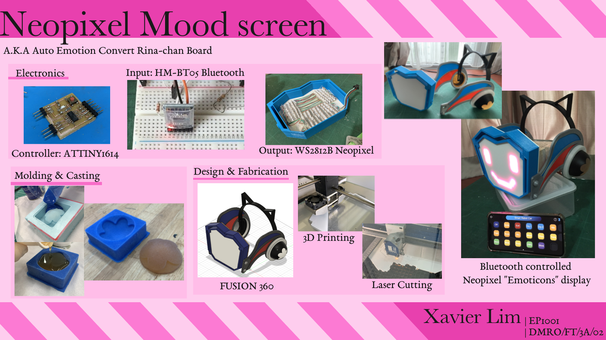

Project Idea
For my project, I decided to create a working replica of an item used by the character "Rina Tennoji" from the TV animated series "Love Live Nijigasaki", which can not only be used as a nice display item, but also a wearable prop for cosplaying.

Design Brief
- Project Title: Neopixel mood-screen (a.k.a Auto Emotion Convert Rina-chan Board)
Functions:
- A screen made out of NeoPixel LED's that can display emotions using pixel art.
- To be controlled remotely using Bluetooth.
Research
There are many people only who attempted to recreate the Rina board, and one that stood out the most is by a Japanese user.

In his design, the display is controlled by push buttons, and all parts are 3D-printed, what's more he documents his entire process from designing to fabrication and programming, hence I will be referencing his methods in order to create my own version, with some added features.
You can read his documentations here, note it is all in Japanese.
Here are my project specifications:
Structure
- Head gear to comprise of 3D printed, laser cut and Mold and casted (using 3D CNC) parts.
Electronics
- Screen to be made out of Neopixel LEDs, controlled via Bluetooth from an iPhone.
- ATTINY1614 board to be used for the program.
- Entire circuitry to be inside the main screen.
Materials
| Component | Remarks | Quantity |
|---|---|---|
| ATTINY1614 echo board | Own fabricated | 1 |
| UPDI programmer | Own fabricated | 1 |
| NeoPixel LED strip | WS2812B | 138 LEDs |
| Bluetooth module | HM-BT05 | 1 |
| Lipo battery | 3.7V | 1 |
| DC-DC boost Converter | MT3608 | 1 |
Design
The entire project consists of 2 parts: the Pixel screen (where the electronics are) and the Head gear (aesthetics), in which are all designed in FUSION 360.
Design sketches

I Designed the frame and light panel as separate parts, where the panel will just rest at the bottom of the frame.
The Neopixel will be placed in series through the board. As there is a distance between each LED, I will have to bend the trip to squeeze them in.

On google sheets I created a neopixel map. The numbers shows the LED number. In total 136 LEDs are used. This would make it easier to program patterns using array.

To fit the other electronics in, I decided to place a panel above the Neopixel strips, where the controller and other components will be placed on top.

As for the design of the other parts, I have tons of image reference from the show and game.
It is difficult to explain in detail the process of designing the parts so I will go through what I had to consider during designing. Designing this took around a week of trial and error, and back and forth referencing multiple images from the TV show, game and official character figurines, as well as estimated measurements of my head.
Time skip to the final design! The colours will not be loyal to the original as this is made as a prototype.


NeoPixel screen The Pixel screen is the first part I designed as it is the most important part in the project. It will house all the electronics. The screen can be split into 3 parts:

I started of with designing the light panel as I had a template to use. I simply created a sketch, uploaded a canvas and traced over it. The frame is to mostly cover up the wearers face, with only the forehead and chin slightly visible.

The light panel will be where the Neopixel will be taped onto. It must be thin enough such that light can pass through it, so I extruded it to 1mm thick with the edges at 2mm for a more secure frame.

The thickness of the frame heavily depends on how the electronics are placed inside it, hence It will be printed last once all the electronics are mounted onto the light panel.
In the design I split the frame into 2 different parts, but it can be printed as a whole.
The back is simply to cover up the electronics. Holes will be cut through to allow access to the switch and for the Bluetooth module to be exposed. I will use a laser cutter to cut this part out later.

It is not shown here, but I extrude cut 2 holes at the corners of the frame so I can use screws to secure the back to the frame.
Head gear
The head gear is the second part I designed, and the most time consuming one.

The head gear is mostly 3D printed. It consists of the Left and Right sides and the Head band. Again the measurements are just throwing in random numbers in consideration of my head size until the proportions look close to the original. The only actual measurement I took was the distance from the back of my head to my nose, which came out around 18cm. I focused on the design and shape of the left side, then once Im satisfied with the final design I mirrored it to create the right side.

The way it was designed was such that it consist of multiple parts. This would allow the printing time to be split into multiple parts, and also the ease of painting the individual parts in the events the filament used is not the correct colour.

__Fabrication
Most of the headgear parts are simply 3D printed. It is just a matter of patience and hoping the prints turn out fine....
3D Printing I printed the first few parts and I realised the parts do not fit perfectly

I ended up having to sand the parts down until it fits, which is a very tedious job. Not wanting to reprint the head compartment and not wanting to spend more time sanding it down, I ended up cutting the loop to fit the piece in and you can see a huge gap from a nice fit.

To solve this I ended up going back to the FUSION 360 design and adding clearance to all parts that are going to fit together by reducing the parts by 0.6mm.


The following prints came out to fit; not a perfect fit but its better than sanding it to fit.

At that time there was no black filament available, so I spray painted the parts black. I secured the headset onto the sides with screws.


The issue here (which I will leave it to the future me) is the difficulty of re-adjusting the headband with the screws being the other way round. As I ended up glueing the head compartments in the screw heads are now inaccessible. The only way to adjust it is to use pliers and unscrew them from the thread ends: not very effective but hey it works!
Mold and Casting
I used the CNC cutter to create a mold and then casted the flower part out of resin. You can see the whole process here.
I had to make 2 casts for both sides of the piece.


The resin cast adds weight to the back of the headset, allowing it to balance when the light display is added. It fits nicely into the 3D printed dome.
The headset is complete!

For the screen I had trouble printing the 1mm thick screen as big panels can easily be warped,usually you can solve this by forcing the layer onto the build plate with glue but printing it at a slower speed gave a pretty good result.

For the case I simply printed it blue.

I used the laser cutter to cut out the back cover.

__Electronics and programming
For the controller I decided to use the ATTINY1614. It has 16 KB In-system self-programmable Flash memory and 2 KB SRAM, which would be sufficient to control all 138 LEDs. (Note 1 Neopixel LED would require 3 bytes of RAM). You can view the pinouts here.

You can read more about it via the Datasheet or SpenceKonde.
Then I went ahead and designed the board.

In the circuit I included a built in button and LED and I pulled out pins 11,12,13.

Following that, I generated the gcode with Mods, cut the board out with the Stepcraft CNC cutter and soldered the parts together.


To program the Tiny 1614 I will need a UPDI. For the Arduino to recognise the board, I had to install megaTinyCore by Spence Konde under board manager.
Next are the I/O devices.
The electronics comprises of an Input and Output device: Bluetooth module and the Neopixel strip. My idea of the program is having an app connected to the controller via Bluetooth. The app will contain multiple buttons where each button will display a pixel art pattern on the Neopixel.
I first tested the board on an Arduino UNO, then I will transfer it to the ATTINY1614 board.
Output - Light Panel (Neopixels) The light panel is the tedious way of creating a neopixel matrix. The printed panel came out really transparent, so I drew out how the neopixels will be arranged and placed the panel over it for reference.


Preparing the Neopixel strips I first cut them to the desired length. Unfortunately the neopixels I bought were abit too big than the intended design (the original called for WS2812B-2020 which are small enough you can probably fit more pixels in than required). Before pasting them on I first trim the sides smaller and bend the corners with a stick to prevent sharp folds or you may destroy the connection. I also drew arrows to indicate the connections.


I then used double sided tape to stick the neopixels on. For every strip placed I tested it to ensure the connections are ok.
Half way into pasting the neopixels I realise if the panel is thin enough to be seen through, the neopixels can be seen taped on from the front. To solve this I ended up sticking a sheet of paper to hide them.


It ended up a very tight fit, managing to place all the neopixels in. After pasting all the pixels I soldered the connecting wires, labelling red for 5V, green for DATA and white for GND.


The Panel nicely fits into the frame. From the initial design I intended to cut a panel is separate the Neopixels from the other electronics, but that may make it more bulky so I simply insulted the LEDs by covering it with tape.

The WS2812B Neopixel strip consists of 3 pinouts: VCC, GND and DATA.

The Neopixel only requires 5V, which means I can simply connect it straight to the controller. The DATA is connected to the output pins, which will control the LED turning on/off and its colour.
How patterns are displayed Back to the LED map I made, each LED is numbered from 0-137. In total 136 LEDs are used.
First is to declare the Pinouts:
#include <Adafruit_NeoPixel.h> #define PIN 6 // pin connected to the NeoPixels #define NUMPIXELS 136 // no. of led Adafruit_NeoPixel pixels = Adafruit_NeoPixel(NUMPIXELS, PIN, NEO_GRB + NEO_KHZ800);
So DATA will be connected to pin 6 of the Arduino.
For each pattern only certain LEDs will be turned on. This can be combined to form an array:

So to Display the pattern "Smile", we can set an array like this:
const PROGMEM uint8_t smile[] = { // smile pattern 4,5,16,13,22,27,38,31,41,42,43,44,45,46,47,48,68,70,75,77,88,89,96,97,105,104,101,100,112,113,125,124,121,120,128,129,136,137 }; //LEDs to turn on int patternsmile = sizeof(smile); //No. of LEDs
smile[] consists an array of which LEDs to turn on, and patternsmile consists of the number of LEDs used to display the pattern.
Next is to setup the Neopixels. This code is to be placed in void setup:
pixels.begin(); // This initializes the NeoPixel library. for(int i=0;i<NUMPIXELS;i++){pixels.setPixelColor(i, pixels.Color(0,0,0));} //set to off pixels.show();
Setting the colours to (0,0,0) makes the LED turn off. The colours are set by (RED,GREEN,BLUE). so (255,0,0) would turn the LED red, while making all the Values 255 will make the LED white. (255,20,147) will make LEDs pink. If you want a specific colour you can just google " (your colour) html RGB code". Now to put the array to use and make the LEDs display:
for(int i=0;i<NUMPIXELS;i++){pixels.setPixelColor(i, pixels.Color(0,0,0));} //set to off for(int point = 0; point < patternsmile; point++) { // read out the pattern led = pgm_read_byte_near(&smile[point]); pixels.setPixelColor(led, pixels.Color(255,20,147));} // increment next point in pattern pixels.show(); //display pattern
We first turn off all LEDs by setting the colours to (0,0,0). Then the for loop will go through the smile array and set the LED assigned numbers to On. Then it will display the pixels.
To control the display I assigned a variable to each display and use if statements.
if (count ==0){ for(int i=0;i<NUMPIXELS;i++){pixels.setPixelColor(i, pixels.Color(0,0,0));} //set to off } else if (count == 1){ //smile //display neopixel smile } else if (count == 2){ //evil //display neopixel evil pixels.show(); } else if (count == 3){ //cry1 //display neopixel cry1 } else{ count = 0 ; // count reset to 0 }
If a button is used to increase the number is pressed, if the button is pressed 2 times, it will display the "evil" pattern, above 3 and counts will reset to 0.
When trying to upload the program, the compiled failed. For the Neopixels to run, Clock must be set to 16MHz Internal. After that it uploads properly.

Plugging it to the Arduino to test the pixels, they aren't line up perfectly but at least the program and connections work!


Blink animation Usually when making light animations, you would display the first frame, use delay() then display the next frame, unfortunately that would break the if statemen. For this I used millis(), which returns the number of milliseconds passed since the Arduino board began running the current program.
unsigned long ms; //time from millis() unsigned long msLast; //last time the LED changed state boolean blinkState = 0; //current LED state #define LED_ON 5000 #define LED_OFF 200 // interval at which to blink (milliseconds) void loop(){ ms = millis(); if (ms - msLast > (blinkState ? LED_ON : LED_OFF)) { int led = 0; if (blinkState == LOW) { int led = 0; for(int i=0;i<NUMPIXELS;i++){pixels.setPixelColor(i, pixels.Color(0,0,0));} //set to off for(int point = 0; point < patternnormal; point++) { // read out the pattern led = pgm_read_byte_near(&normal[point]); pixels.setPixelColor(led, pixels.Color(255,20,147));} // increment next point in pattern blinkState = HIGH; } else { for(int i=0;i<NUMPIXELS;i++){pixels.setPixelColor(i, pixels.Color(0,0,0));} //set to off for(int point = 0; point < patternblink; point++) { // read out the pattern led = pgm_read_byte_near(&blink[point]); pixels.setPixelColor(led, pixels.Color(255,20,147));} blinkState = LOW; } pixels.show(); msLast = ms; } }
This creates the blinking animation.
Input: Bluetooth Module
I used the HM-BT05 Module as it can be recognised by an Iphone. The module requires 4 pins: VCC, GND, TX and RX.

The RX pin requires 3.3V, so a voltage divider is used to bring the voltage down.
Bluetooth control with Iphone
There are multiple apps that can let you communicate with Arduino Bluetooth modules. Two apps I would reccomend:
Its interface is made for Arduino bluetooth robot cars, but one of the useful features is setting control buttons. With a push of a button you can send can characters or messages to the module in Text or Hexadecimal. You can name the buttons as well.


- Has multiple interfaces, most useful is Terminal mode if you want to send messages to the module.

Bluetooth Program
Here is a simple program to control an LED light, taken from Makers portal.
#include <SoftwareSerial.h> #define LED 4 SoftwareSerial BT05(3, 4); // TX,RX char appData; String inData = ""; void setup() { Serial.begin(115200); Serial.println("BT05 serial started at 9600"); BT05.begin(9600); // set HM10 serial at 9600 baud rate pinMode(LED, OUTPUT); // onboard LED digitalWrite(LED, LOW); // switch OFF LED } void loop() { BT05.listen(); // listen the HM10 port while (BT05.available() > 0) { // if HM10 sends something then read appData = BT05.read(); inData = String(appData); // save the data in string format Serial.write(appData); } if ( inData == "F") { Serial.println("LED OFF"); digitalWrite(LED, LOW); // switch OFF LED delay(500); } if ( inData == "N") { Serial.println("LED ON"); digitalWrite(LED, HIGH); // switch OFF LED delay(500); digitalWrite(LED, LOW); // switch OFF LED delay(500); } }
Here RX is connected to pin 4 through a voltage divider and TX to pin 3. LED is connected to pin 13.
The LED control works by reading the input. Sending "F" will turn the LED off while sending "N" Will cause the LED to blink. You can also view the Arduino serial com.
Using the ELEGOO app, I programmed the Off button to send "F" and the Blink button to send "N".
Integration
Combining the Bluetooth program and the Neopixel code, you can view the whole code Here.
Next is making the wires I followed the circuit diagram as shown below.

I soldered the wires and resistors together and used shrink tubes to cover the bare wires.

For the power source I used a 3.7V Lipo battery. As the circuit requires 5 volts I used the DC-DC boost converter to step up to 5V.

Then I wired everything else and secured the cover with screws.

With that the Neopixel board is done! ＼(＾▽＾)／
Assembly
The headgear and Neopixel screen are secured with screws.

Having a large hole to mount the frame to the headset was a design error, so I glued a washer in the hole and screwed it in place, then I used a hollow dome to cover the screw.

Wearable
For it to be used as a cosplay prop, it must be able to be worn (as see on TV). Prepare to see selfies wwww.
The main idea is to stick a pair of goggles at the back and attach a strap behind. As a quick prototype I used balsa wood planks and an old pair of safety goggles.
I tried to methods of attaching the goggles on. First method is attaching it to the back of the screen. This method allows the goggles to be hidden from the sides, however the screen cannot be adjustable. This prototype the wood I used was thick, adding extra weight to the whole mask, so when wearing it it prevents you from seeing and breathing.


The second method I used thinner wood, this time instead of sticking it to the screen I wedge it between the headgear. This makes it possible to tilt the screen when being worn. However the wood is too large and you can see it from the front. I can modify this by using clear acrylic instead of wood, and reducing the size so it does not stick out of the mask. This one is easier to wear than the previous method.


Documentation
End product

Poster
Video
In all, the final design is close to its original reference, although some changes can be made and there are multiple more things that must be solved in order to perfect it:
- Neopixel used can be smaller (preferably WS2812-2020), this can allow more unique images to be displayed.
- Light panel design should be made of square grids instead of flat to give off the pixelated effect.
- Finding a way to allow users to see the front when wearing the frame. One idea is to make the light panel translucent so the wearer will be able to see whats infront, or mount something like a VR headset at the back and put a camera infront (something like a drone VR headset).
- Ease of wearing it. The screen can be quite heavy and when worn the goggles may pinch your nose, making you unable to see or breathe. The weight also makes the mask slide off your nose. Few ways to solve this is to reduce the weight of the entire mask (distribution the weight of the frame by spreading the electronics out instead of having it all in the screen). To prevent the mask from slipping we can replace the goggles strap with a stronger head strap. The methods above can be modified to make the goggles more hidden, other than that design changes to the headgear sides can be changed to make it more hidden.
Project files: Download
----------------------------------------END OF PROJECT----------------------------------------